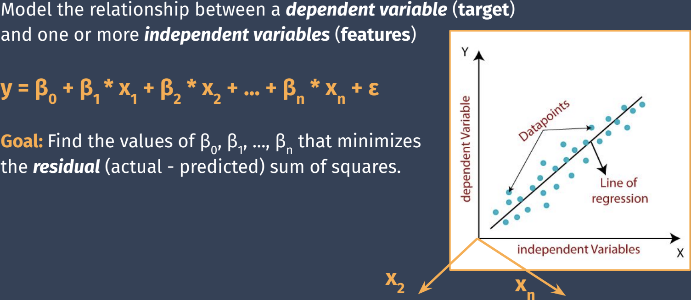
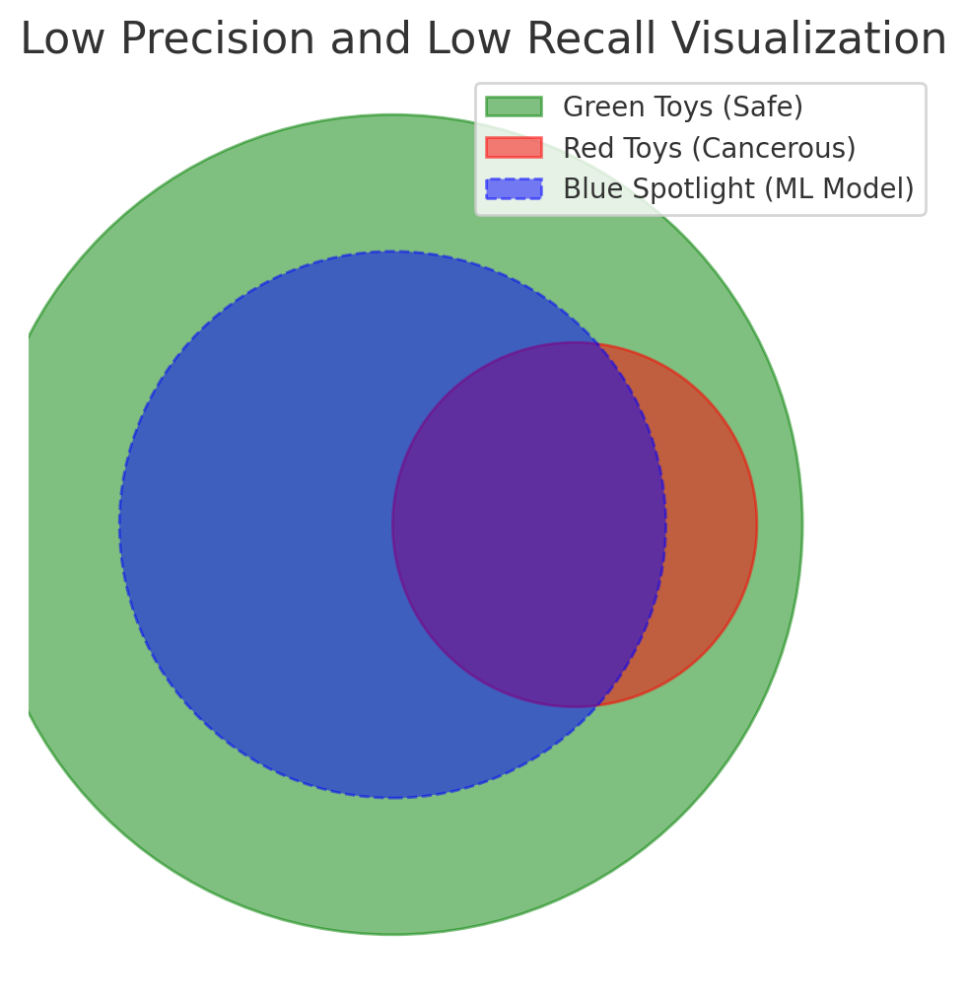

<!DOCTYPE html>
<html lang="en">

<head>
  <meta charset="UTF-8" />
  <meta http-equiv="X-UA-Compatible" content="IE=edge" />
  <meta name="viewport" content="width=device-width, initial-scale=1.0" />
  <title>Map</title>
  <style>
    svg.markmap {
      width: 100%;
      height: 100vh;
    }

    th {
      text-align: center;
    }

    td {
      text-align: left;
      padding: 10px;
    }

    .eq {
      text-align: right;
    }
  </style>
  <script src="https://cdn.jsdelivr.net/npm/markmap-autoloader@0.15.2"></script>
</head>

<body>
  <div class="markmap">

    <script type="text/template">
      ---
      markmap:
        <!-- maxWidth:  -->
        colorFreezeLevel: 6
        duration: 1000
        initialExpandLevel: -1
        extraJs: [""]
        extraCss: [""]
      ---
      - **ML**
        - MLDLC
          - Data Preprocessing
            - Data Cleaning
              - Missing Values
                - Imputation
                - Deletion
                - Sampling
                - SMOTE (Synthetic Minority Over-sampling Technique) - Synthetic generation of missing data
                - **Note**: We are adding bias to the data when we fill in the missing data with these techniques.
              - errors
              - duplicates
              - invalid data
            - Data Integration
            - Data Transformation
            - Data Reduction
            - Data Discretization
          - ...
          - Model Accuracy
            - **MAE (Mean Absolute Error)**
            <br>$\frac{1}{n} \sum\limits_{i=1}^{n} |y_{i} - \hat{y}_{i}|$
            <br> Measures
            - **MSE (Mean Squared Error)**
            <br>$\frac{1}{n} \sum\limits_{i=1}^{n} (y_{i} - \hat{y}_{i})^{2}$
            <br> Measures
            - **RMSE (Root Mean Squared Error)**
            <br>$\sqrt{\frac{1}{n} \sum\limits_{i=1}^{n} (y_{i} - \hat{y}_{i})^{2}}$
            <br> Measures
            - **R-Squared (Coefficient of Determination)**
            <br>$1 - \frac{\sum\limits_{i=1}^{n} (y_{i} - \hat{y}_{i})^{2}}{\sum\limits_{i=1}^{n} (y_{i} - \bar{y})^{2}}$
            <br> Measures the proportion of the variance for a dependent variable that's explained by independent variable(s) in a regression model.
            R-Squared is a scale-free score i.e. irrespective of the values being small or large, the R-Squared will always be < 1.
            R-Squared is a relative measure of fit, it can be used to compare different models.
            R-Squared can be negative if the model is worse than a horizontal line.
            R-Squared can be 1 if the model is perfect.
            - **Adjusted R-Squared**
            <br>$1 - \frac{(1 - R^{2})(n - 1)}{n - p - 1}$
            <br> Measures
        - Notes checklist
          - todo:
            - table(MAE, MSE, RMSE, R-Squared, Adjusted R-Squared, ...)
          - questions
            - kernel tick? (when talking about hyperplane and when linear/non-linear classification line/plane don't work)
        - volcano checklist
          - go through regression video, especially Juptyer Notebooks.
          - SPSS and SAS?
        - bob
          - **bob's job**: 
            add items such lists (see above)
            without avi having to find them.
            - each list has tags
              (primary tag tells the
              Hierarchical path of the list)
              (secondary tag tells what other
              types can the list fall under)
              - example: tags for exercise list
                - primary tag:
                  - physical health
                - secondary tags:
                  - mental health
                  - emotional health
                  - financial health
                  - social health
        - <table><tr><th>Topic</th><th>Math</th><th>Equation</th><th>ML</th><th>Volcano</th><th>House</th><th>Test score</th></tr><tr><td>**Linear**<br>**Regression**$\;\;\;$</td><td><br><br>$\text{Output:}$<br>$\text{Input:}$<br>$\text{Coefficient:}$<br>$\text{Intercept:}$</td><td><div class="eq">$\hat{y} = \beta_0 + \beta_i x_i$<br><br>$\hat{y}:$<br>$x_i:$<br>$\beta_i:$<br>$\beta_0:$<br></div></td><td><br><br>$\text{Prediction}$<br>$\text{Feature}$<br>$\text{Weight}$<br>$Bias$</td><td><br><br>$\text{Eruption Magnitude}$<br>$\text{g, } time\_series, \dots$<br>$\uparrow weights$<br>$\leftarrow .$</td><td><br><br>$\text{House Price}$<br>$\text{\#bed, \#bath, \dots}$<br>$\uparrow weights$<br>$\leftarrow .$</td><td><br><br>$\text{Test Score}$<br>$\text{\#hours\_studied, \#hours\_slept, \dots}$<br>$\uparrow weights$<br>$\leftarrow .$</td></tr><tr><td>**Calculus**$\;\;\;$</td><td>Cost Function Optimization</td><td></td><td></td><td></td><td></td><td></td></tr><tr><td>**Probability**$\;\;\;$</td><td></td><td></td><td></td><td></td><td></td><td></td></tr><tr><td>**Statistics**$\;\;\;$</td><td></td><td></td><td></td><td></td><td></td><td></td></tr><tr><td>**EDA**$\;\;\;$</td><td></td><td></td><td></td><td></td><td></td><td></td></tr><tr><td>**Regression Algorithms**$\;\;\;$</td><td></td><td></td><td></td><td></td><td></td><td></td></tr></table>
          - **Linear Algebra**
            - **Vectors**
              - **Basic Operations**
                - **Magnitude**
                - **Direction**
                - **Vector Decomposition**
                - **Dot Product**
                - **Cross Product**
              - **Advanced Concepts**
                - **Angle Between Vectors**
                - **Vector Projection**
                - **Orthogonality**
                - **Linear Independence**
            - **Matrices**
              - **Basic Operations**
                - **Matrix Addition**
                - **Scalar Multiplication**
                - **Matrix Multiplication**
              - **Matrix Concepts**
                - **Matrix as a System of Linear Equations**
                - **Matrix as Vectors**
                - **Matrix Determinant**
                - <br>**Matrix Rank**:
                  <br># of linearly independent rows or columns in a matrix.
                  <br>**OR**: How many real dimensions does the matrix span?
                  <br>**E.g.**: 3x3 matrix with rank 2 spans a 2D plane in 3D space.
                  $$\begin{bmatrix}1 & 2 & 3 \\ 4 & 5 & 6 \\ 7 & 8 & 9\end{bmatrix}$$
                  Rank of this matrix is 2 because the third row is a linear combination of the first two rows.
                - **Matrix Transpose**
                - **Matrix Inverse**
              - **Advanced Matrix Concepts**
                - **Transformations**
                  - **Identity Matrix**
                  - **Reflection Matrix**
                  - **Shear Matrix**
                - **Matrix Decompositions**
                  - **Row Echelon Form**
                  - **Singular Matrix**
                  - **Eigenvalues and Eigenvectors**
          - **Calculus**
            - **Foundation**
              - **Functions**: 
                <br>$f: X \to Y$
                Relation b/w a set of inputs (X) and a set of possible outputs (Y)
                where each input (x) is related to exactly one output (y).
                - <br>**ML example**: Linear Regression Model
                  - **Standard Form Equations**
                    - **Single Feature**: $\hat{y} = \beta_0 + \beta_1 x + \varepsilon$
                      - **Proof**: $y = mx + c \equiv \hat{y} = \beta_0 + \beta_1 x + \varepsilon$
                        $y = mx + c$ (standard form)
                        $\rightarrow y = c + mx$ (rearrange)
                        $\rightarrow y = \beta_0 + \beta_1 x$ (rename constants)
                        $\rightarrow \hat{y} = \beta_0 + \beta_1 x + \varepsilon$ (add error term $\varepsilon$ to account for noise)
                    - <br>**Multiple Features**: $\hat{y} = \beta_0 + \beta_1 x_1 + \beta_2 x_2 + \dots + \beta_n x_n + \varepsilon$
                      - **$\hat{y}$ (Predicted Value)**
                        The value predicted by the model.
                        - **Target** variable (ML)
                        - **Output** variable (ML)
                        - **Label** (ML)
                        - **Prediction** variable (Statistics)
                        - **Dependent** variable (Statistics)
                        - **Response** variable (Statistics)
                      - **$x_1, x_2, \dots, x_n$ (Input Features)**
                        The input variables used to make predictions.
                        - **Features** (ML)
                        - **Predictor** variables (Statistics)
                        - **Independent** variables (Statistics)
                        - **Explanatory** variables (Statistics)
                        - **Input** variables (Statistics)
                      - **$\beta_0$ (Intercept Term)**
                        The value of $\hat{y}$ when all input features are zero.
                        - **Intercept** term (Statistics)
                        - Bias term (not to be confused with algorithmic bias) (ML)
                        - **Constant** term (Statistics)
                      - **$\beta_1, \beta_2, \dots, \beta_n$ (Model Coefficients)**
                        The weights applied to the input features.
                        - **Weights** (ML)
                        - **Parameters** (ML)
                        - **Coefficients** (Statistics)
                      - **$\varepsilon$ (Error Term)**
                        The difference between the predicted value and the true value.
                        - **Noise** (ML)
                        - **Unexplained variation** (Statistics)
                        - **Residuals** (Statistics)
                        - **Random error** (Statistics)
                  - **Matrix Form Equations**
                    - $\hat{y} = X\beta + \varepsilon$
                      - **$\hat{y}$ (Predicted Value)**
                        The value predicted by the model.
                      - **$X$ (Design Matrix)**
                        A matrix of input features.
                      - **$\beta$ (Coefficient Vector)**
                        A vector of model coefficients.
                      - **$\varepsilon$ (Error Vector)**
                        The difference between the predicted value and the true value.
              - **Limits**: $\lim_{x \to a} f(x) = L$
              - **Continuity**
            - **Differential Calculus**
              - **Derivatives**
              - **Partial Derivatives**
            - **Multivariable Calculus**
              - **Gradient**
              - **Convex Functions**
            - **Optimization Techniques**
              - **Gradient Descent**
                - **Core Methods**
                  - **Batch**
                  - **Stochastic**
                  - **Mini-Batch**
                - **Momentum-Based Methods**
                  - **Momentum**
                  - **Nesterov**
                - **Adaptive Methods**
                  - **Adagrad**
                  - **AdaDelta**
                  - **RMSprop**
                  - **Adam**
                  - **AdaMax**
            - **Integral Calculus**
              - **Integration**
          - **EDA**
            - ...
            - ...
            - ...
            - ...
            - ...
          - **Feature**<br>**Engineering**
            - ...
            - ...
            - ...
            - ...
            - ...
          - **Supervised & Unsupervised Learning**
            - <br><br>**Supervised Learning**
              - **Basics**
                - <br>**What**: ...
                - <br>**Why**: ...
                - <br>**How**: ...
              - **Types**
                - **Regression Algorithms** <!-- Needs lots of fixing -->
                  - **Linear Regression**
                    
                    - **Limitations**
                      - **Underfitting**
                        Model is too simple to
                        capture the underlying 
                        structure of the data.
                        <br>**Causes** $\rightarrow$
                          - **Oversimplified model**
                            Using linear model for 
                            inherently non-linear relationships.
                          - **Insufficient features** 
                          - **Improper regularization parameter tuning**
                          - **Poor Feature Engineering**
                          - **High Bias**
                            making strong assumptions about
                            the form of the underlying function.
                          - **Low Data Quality**
                            - noisy data
                            - missing data
                            - inaccurate representation
                              of the problem space.
                      - **Overfitting**
                        Model captures the
                        noise in the data.
                        <br>**Note**: Lack of **Cross-Validation**
                        can lead to undetected overfitting.
                        <br>**Causes** $\rightarrow$
                        - Opposite of *underfitting* $\uparrow$
                    - **Types**
                      - **Ordinary Least Squares (OLS) Linear Regression**
                        <br>Sensitive to:
                          - <br>**Outliers**
                            <br>($\because$ outliers can have a
                            large effect on the estimated coefficients)
                          - <br>**Multicollinearity**
                            <br>($\because$ multicollinearity makes it 
                            difficult to assess the effect of 
                            independent variables individually)
                      - **Ridge Regression**
                        (L2 Regularization)
                        <br>Keep all the predictors, but shrink the
                        coefficients $\rightarrow$ $\downarrow$ model complexity.
                        ==**Q**: How to do that only less important predictors?==
                        ==**Q**: why would we want to keep corellated predictors?==
                        <br>$Loss_{Total} = L_{default\ model} + \lambda \sum\limits_{i=1}^{n} \beta_{i}^{2}$
                        $\quad \lambda: \text{Regularization Parameter}$
                        <br>Penalizes the square of 
                        the magnitude of coefficients. **Result** $\rightarrow$
                        - <br><br>Reduced coefficient size
                          $\rightarrow$ less sensitive to noise
                          **Note**: It does not eliminate coefficients,
                          it just shrinks them.
                        - Particularly useful for **handling**
                          **multicollinearity** among predictors by 
                          reducing their coefficients.
                      - <br><br>**Lasso Regression**
                        (L1 Regularization)
                        <br>Along with shrinkage, it can also
                        eliminate some coefficients.
                        ==**Q**: How to do that only less important predictors?==
                        <br>$Loss_{Total} = L_{default\ model} + \lambda \sum\limits_{i=1}^{n} |\beta_{i}|$
                        $\quad \lambda: \text{Regularization Parameter}$
                        <br>Penalizes the absolute 
                        size of coefficients. **Result** $\rightarrow$
                        - Reduces the number of features
                          **Note**: Lasso regression 
                          can eliminate coefficients.
                        - Particularly useful for 
                          driving the coefficients of
                          less important features to zero.
                      - **Elastic Net Regression**
                        (L1 + L2 Regularization)
                        <br>Combines the penalties of 
                        Lasso and Ridge Regression.
                        <br>$Loss_{Total} = L_{default\ model} + \lambda_{1} \sum\limits_{i=1}^{n} |\beta_{i}| + \lambda_{2} \sum\limits_{i=1}^{n} \beta_{i}^{2}$
                        $\quad \lambda_{1}, \lambda_{2}: \text{Regularization Parameters}$
                        <br>**Result** $\rightarrow$
                        - <br>It can eliminate some coefficients
                          and shrink others.
                        - Particularly useful when there are 
                          **many correlated predictors**.
                    - Juptyer Notebook
                      - **Linear Regression**
                      - **Ridge Regression**
                      - **Lasso Regression**
                      - **Elastic Net Regression**
                      - **Polynomial Regression**
                      - **All other**
                      - **Violin Plot**
                      - Print the **coefficients**, **intercept** and **features**.
                        - this will help us see which features were dropped/changed by Lasso and Ridge.
                        - The whole idea is if we use SPSS or SAS
                          - it will show you in the iteration logs which features were dropped.
                            - sometimes it asks the user if they want to keep the feature or not.
                  - **Logistic Regression**
                    - Classification Result Analysis
                      - **Confusion Matrix**
                        - Precision-recall-visualization: 
                          - 
                          - Toy factory near plutonium mine game-show
                            - red toys in a small circle in the middle of the room (cancerous toys)
                            - rest of the toys are green (safe toys)
                            - ML model has to shine circular blue spotlight to burn toys.
                            - rest of the toys (shipped)
                              - blue overlap with red (TP - cancerous toys burnt)
                              - blue overlap with green (FP - safe toys burnt)
                              - non blue overlap with red (FN - cancerous toys shipped)
                              - non blue overlap with green (TN - safe toys shipped)
                            - there are 2 judges: male precision judge, and female recall judge
                              - **high recall** score: less FN (less cancerous toys need to recalled by factory)
                              - **low recall** score: more FN (more cancerous toys need to be recalled factory) 
                              - **high precision** score: less FP (less safe toys burnt)
                              - **low precision** score: more FP (more safe toys burnt)
                            - What we want from the blue spotlight handler:
                              - get high precision & recall score from the judges. 
                            - **Note**: F1 boss judge can replace both judges.
                        - **Accuracy**
                          $\frac{TP + TN}{TP + TN + FP + FN}$
                        - **Precision**
                          $\frac{TP}{TP + FP}$
                        - **Recall**
                          $\frac{TP}{TP + FN}$
                        - **F1 Score**
                          $\frac{2 \times Precision \times Recall}{Precision + Recall}$
                        - **AUC-ROC**
                        - **ROC Curve**
                        - **PR Curve**
                        - **AUC-PR**
                - **Classifications Algorithms**
                - **Bagging & Boosting Techniques**
            - **Supervised**<br>..........vs..........<br>**Unsupervised**
              - 
                - <br><br><br>
                  - 
            - <br><br>**Unsupervised Learning**
              - **Basics**
                - <br><br><br>**What**: It learns hidden patterns/structures in the data.
                - **Why**: To discover:
                  - clusters of similar data points
                  - graph structures ?? ❌: TODO ??
                  - latent factors, i.e. reducing the dimensionality of the data.
              - **Types**:
                - <br><br>**1 Dimensionality Reduction**:
                  Reducing dimensionality (# of features) of the data while preserving the essential information.
                  
                  - **Only KEEP MOST IMPORTANT features**
                    (Feature Selection) No modification to the
                    features. Just select the most important ones.
                    - <br><br>**Backward Elimination**: Start with all features and remove one by one.
                    - <br><br>**Forward Selection**: Start with no features and add one by one.
                    - <br><br>**Random Forest**: 🚨: TODO
                      Something to do with creating multiple decision trees, voting on their predictions.
                      Feature's importance $\propto$ change in prediction when something about the feature is changed.
                      
                  - **Find NEW combinations of features**
                    (Feature Extraction) Create new features from the existing ones.
                    - **Linear Methods**
                      Pretty established, but can't capture complex patterns.
                      - 
                        **PCA**: Principal Component Analysis
                      - **FA**: Factor Analysis
                      - **LDA**: Linear Discriminant Analysis
                      - **Truncated SVD**: Truncated Singular Value Decomposition
                    - **Non-linear Methods (Manifold Learning)**
                      Can capture complex patterns, but are computationally expensive.
                      - **Kernel PCA**
                      - **t-SNE**: t-Distributed Stochastic Neighbor Embedding
                      - **MDS**: Multi-Dimensional Scaling
                      - **Isomap**: Isometric Mapping
                - <br><br>**2 Clustering**:
                  Grouping similar data points together.
                  
                  - **K-means**
                  - **Hierarchical**
                  - **Density-based**
                - <br><br>**3 Association Rule Mining**:
                  Finding interesting relations between variables in large databases.
                  
                - <br><br>**4 Anomaly Detection**:
                  Finding unusual data points in the data.
                  
                - <br><br>**5 Generative modeling**:
                  Generating new data points from the existing ones.
                  
                - <br><br>**6 Visualization - t-SNE**:
                  Visualizing high-dimensional data in 2D/3D. (see: Dimensionality Reduction $\to$ Non-linear Methods $\to$ t-SNE)
                  
    </script>
  </div>
</body>

</html>